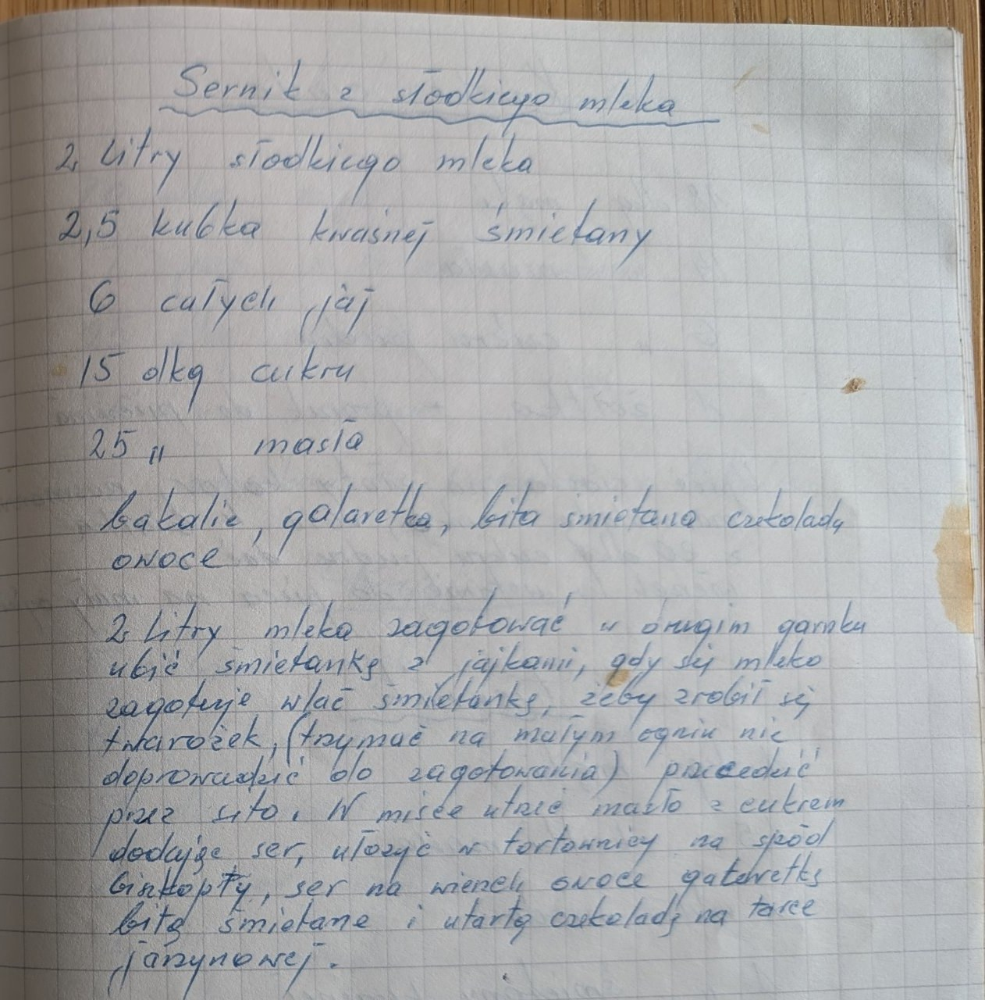

Sernik ze słodkiego mleka


Składniki
- 2 litry słodkiego mleka
- 2,5 kubka kwaśnej śmietany
- 6 całych jaj
- 15 dkg cukru
- 25 dkg masła
- bakalie
- galaretka
- bita śmietana
- czekolada
- owoce
- biszkopty
Przygotowanie
- 2 litry mleka zagotować.
- W drugim garnku ubić śmietankę z jajkami.
- Gdy mleko się zagotuje, wlać śmietankę, żeby zrobił się twarożek (trzymać na małym ogniu, nie doprowadzić do zagotowania).
- Przecedzić przez sito.
- W misce utrzeć masło z cukrem, dodając ser.
- W tortownicy ułożyć na spód biszkopty, ser, na wierzch owoce, galaretkę, bitą śmietanę i czekoladę utartą na tarce jarzynowej.
Oryginalny zapis
Sernik ze słodkiego mleka 2 litry słodkiego mleka 2,5 kubka kwaśnej śmietany 6 całych jaj 15 dkg cukru 25 " masła bakalie, galaretka, bita śmietana czekolada owoce 2 litry mleka zagotować w drugim garnku ubić śmietankę z jajkami, gdy się mleko zagotuje wlać śmietankę, żeby zrobił się twarożek, (trzymać na małym ogniu nie doprowadzić do zagotowania) przecedzić przez sito. W misce utrzeć masło z cukrem dodając ser, ułożyć w tortownicy na spód biszkopty, ser na wierzch owoce galaretkę bitą śmietanę i utartą czekoladę na tarce jarzynowej.